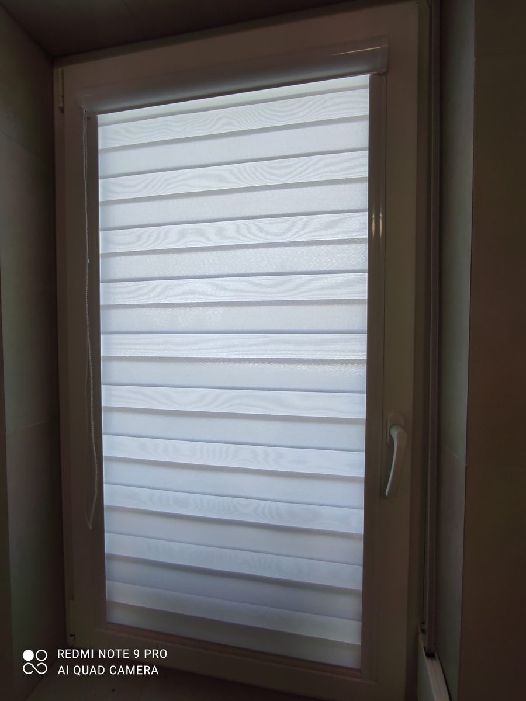
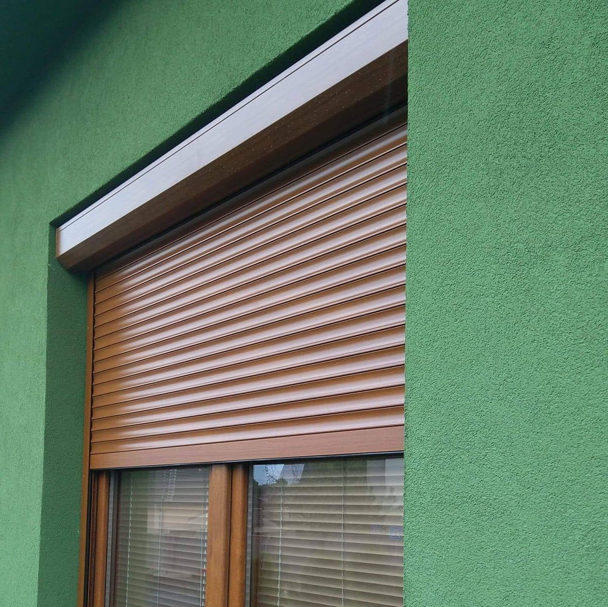

Produkty & služby
Kompletné exteriérové aj interiérové tienenie na mieru – vrátane porovnania najpredávanejších lamiel a vzorkovníka RAL farieb.
Porovnanie hlavných typov lamiel podľa profilu
Dva najžiadanejšie profily lamiel. Profil v tvare „Z" vyniká maximálnym zatemnením a odolnosťou, profil v tvare „C" elegantným dizajnom a flexibilným naklápaním.
| Vlastnosť / parameter | Lamela s profilom „Z" TOP predávanosťGeometrický profil | Lamela s profilom „C"Elegantný zaoblený profil |
|---|---|---|
| Tvar lamely | Geometrický tvar „Z" s vlisovaným tesnením | Zaoblený elegantný tvar „C" |
| Miera zatemnenia | Maximálna – vysoká tma aj počas dňa | Stredná až vysoká – naklápanie do oboch strán |
| Odolnosť voči vetru | Extrémne vysoká – vhodné pre veterné oblasti | Štandardná až vysoká |
| Odporúčané použitie | Rodinné domy, spálne, obývačky, novostavby | Administratívne budovy, byty, terasy |
Štandardné RAL farby v ponuke
Vyberte si z najpoužívanejších odtieňov alebo si necháme lamely nastreknúť podľa vášho priania.
Interiérové tienenie s dôrazom na komfort
Doladíme atmosféru každej miestnosti – od praktických hliníkových žalúzií po jemné látky, ktoré rozptýlia svetlo a zachovajú súkromie.
- Horizontálne hliníkové žalúzie
- Látkové rolety rozličnej priepustnosti svetla
- Plissé – skladané tienenie pre atypické okná
- Vertikálne žalúzie pre kancelárie a veľké presklenia


Exteriérové hliníkové rolety
Spoľahlivá ochrana proti teplu, hluku aj nezvaným návštevníkom. Vyberáme z priznaných aj podomietkových boxov podľa typu stavby.
- Priznané (nadstavbové) boxy – ideálne pre rekonštrukcie
- Podomietkové boxy – neviditeľné riešenie do novostavieb
- Ručné aj motorické ovládanie s možnosťou smart riadenia
- Vysoká tepelná a zvuková izolácia
Siete proti hmyzu
Príjemné vetranie bez otravného hmyzu. Vyrobíme a namontujeme siete presne na mieru pre okná, dvere aj veľké terasové portály.
- Pevné okenné siete v hliníkovom profile
- Dverové pántové siete
- Posuvné siete
- Plisované siete pre terasové HS portály


Markízy a tienenie terás
Premeňte terasu na príjemné miesto oddychu aj počas horúcich dní. Kazetové markízy chránia látku pred poveternostnými vplyvmi.
- Kazetové markízy s plnou ochranou látky
- Ručné aj motorické ovládanie
- Možnosť senzorov vetra a slnka
- Široký výber látok a odtieňov
Neviete si vybrať? Poradíme vám priamo u vás doma
Pri bezplatnom zameraní vám odporučíme najvhodnejší typ tienenia aj farbu podľa vašej stavby a orientácie okien.
Dohodnúť bezplatné zameranie